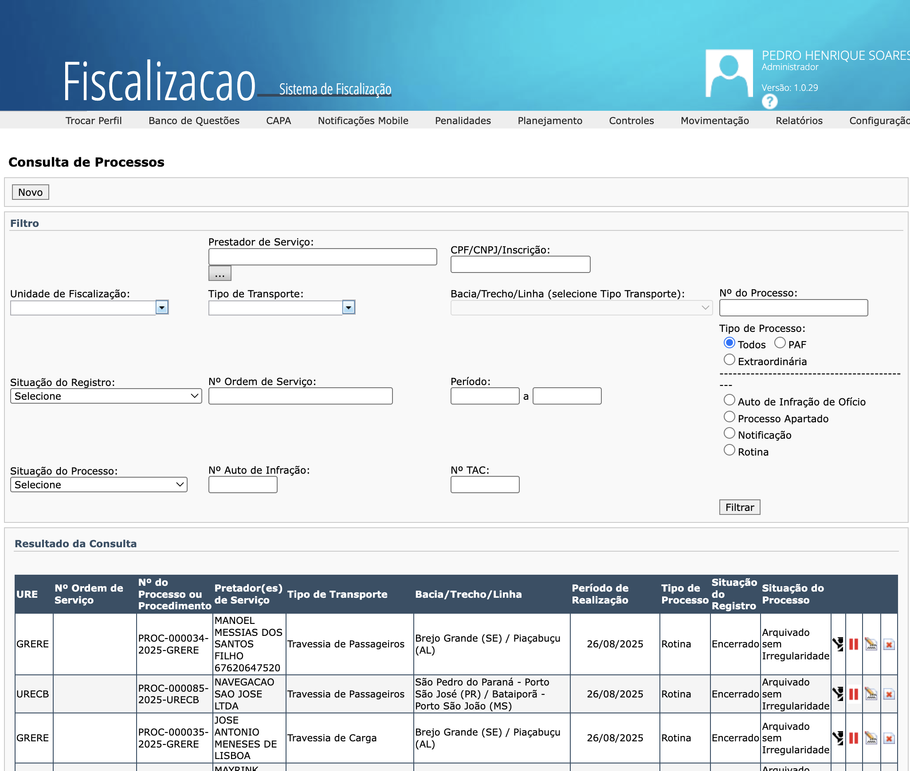

Cadastro e controle dos processos de fiscalização
PLANEJAMENTO
Implementação
Sistema implantado para o cadastro dos dados dos processos de fiscalização.
Penalidades e TAC
Módulo Penalidades para os processos sancionadores e, em seguida, módulo para os Termos de Ajuste de Conduta (TAC).
Arrecadação de Multas
Integração ao Sistema de Arrecadação de Multas: a partir das fiscalizações cadastradas no SFIS, efetua a geração do boleto e todo o controle da arrecadação.

Trilha Técnica da Fiscalização · SFC / GPF — ANTAQ
26 / 61